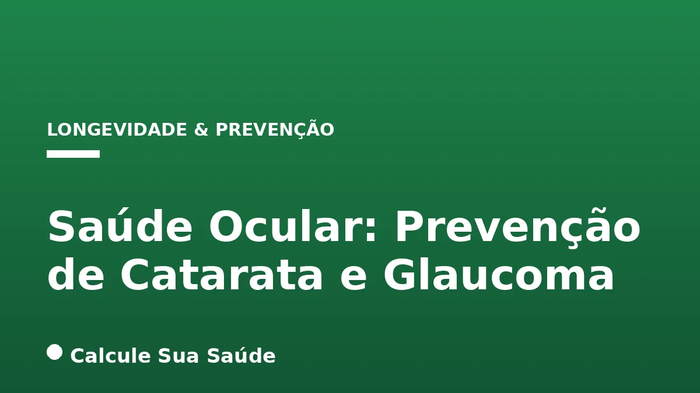

Aviso médico importante
Este conteúdo é educativo e informativo e não substitui a consulta, o diagnóstico ou o tratamento de um profissional de saúde. Em caso de sintomas, procure orientação médica.
Índice do Artigo
- 1. A Anatomia da Visão e a Importância da Saúde Ocular
- 2. Catarata: Entendendo a Opacificação do Cristalino
- 3. Sintomas e Diagnóstico da Catarata
- 4. Prevenção e Tratamento da Catarata: O Que a Ciência Recomenda
- 5. Catarata no Brasil: Dados Epidemiológicos e Desafios
- 6. Glaucoma: O Ladrão Silencioso da Visão
- 7. Sintomas e Diagnóstico Precoce do Glaucoma
- 8. Tratamento e Controle do Glaucoma: Preservando a Visão
- 9. Glaucoma no Brasil: Panorama Epidemiológico e Desafios de Acesso
- 10. Mitos e Verdades sobre Catarata e Glaucoma
- 11. A Relação entre Doenças Crônicas e a Saúde Ocular
- 12. O Papel da Alimentação e do Estilo de Vida na Prevenção
- 13. A Importância dos Exames Oftalmológicos de Rotina
- 14. Tecnologia e Inovação no Diagnóstico e Tratamento Ocular
- 15. Diferenças Cruciais entre Catarata e Glaucoma
- 16. Conclusão: Um Olhar para o Futuro da Sua Visão
- 17. Perguntas frequentes
A saúde ocular é um pilar fundamental para a qualidade de vida, permitindo-nos interagir com o mundo e realizar atividades diárias. No entanto, doenças como a catarata e o glaucoma representam sérias ameaças à visão, sendo as principais causas de deficiência visual e cegueira em escala global e no Brasil. Compreender suas causas, fatores de risco, sintomas e, crucialmente, as estratégias de prevenção e tratamento é vital para preservar a capacidade de enxergar.
Neste artigo aprofundado, o portal Calcule Sua Saúde, comprometido com a informação baseada em evidências, explora de forma detalhada a catarata e o glaucoma. Abordaremos desde a fisiopatologia e epidemiologia até as intervenções clínicas e cirúrgicas com respaldo científico, desmistificando crenças populares e fornecendo orientações claras para a manutenção de uma visão saudável ao longo da vida. A prevenção, o diagnóstico precoce e o acompanhamento oftalmológico regular são as chaves para mitigar o impacto dessas condições.
É importante ressaltar que as informações aqui apresentadas têm caráter educativo e não substituem a consulta e avaliação de um profissional de saúde qualificado. Em caso de qualquer sintoma ou dúvida relacionada à sua visão, procure um oftalmologista.
Em resumo
- A catarata é a opacificação do cristalino, principal causa de cegueira reversível, tratada exclusivamente por cirurgia.
- O glaucoma é uma neuropatia óptica progressiva, principal causa de cegueira irreversível, geralmente associada ao aumento da pressão intraocular.
- Ambas as condições são silenciosas em estágios iniciais, reforçando a importância de exames oftalmológicos regulares, especialmente após os 40-50 anos.
- Fatores de risco comuns incluem idade avançada, histórico familiar, diabetes e uso prolongado de corticoides.
- A proteção contra raios UV, alimentação saudável e evitar automedicação são medidas preventivas importantes para a saúde ocular.
- Não existem tratamentos clínicos ou naturais com eficácia comprovada para reverter catarata ou curar glaucoma; o manejo é focado na cirurgia para catarata e no controle da pressão intraocular para glaucoma.
1. A Anatomia da Visão e a Importância da Saúde Ocular
A visão é um dos sentidos mais complexos e cruciais para a interação humana com o ambiente. Nossos olhos são órgãos intrincados, capazes de captar a luz, transformá-la em impulsos elétricos e enviá-los ao cérebro para interpretação. Componentes como a córnea, o cristalino, a retina e o nervo óptico trabalham em conjunto para formar as imagens que percebemos. Qualquer alteração em um desses elementos pode comprometer seriamente a qualidade da visão.
A saúde ocular vai além da simples capacidade de enxergar. Ela engloba a ausência de doenças, o conforto visual e a capacidade de realizar tarefas cotidianas sem esforço. Doenças oculares podem ter um impacto devastador na autonomia e na qualidade de vida, levando à dependência e ao isolamento social. Por isso, a prevenção e o cuidado contínuo são essenciais para manter a integridade desse sentido tão valioso.
2. Catarata: Entendendo a Opacificação do Cristalino
A catarata é uma condição ocular caracterizada pela opacificação do cristalino, a lente natural do olho. O cristalino, que normalmente é transparente, tem a função de focar a luz na retina, permitindo a formação de imagens nítidas. Quando ele se torna opaco, a luz não consegue passar adequadamente, resultando em visão turva, embaçada ou nublada. A catarata é reconhecida mundialmente como a principal causa de cegueira reversível, o que significa que a perda de visão pode ser restaurada com tratamento adequado.
Embora seja frequentemente associada ao envelhecimento, a catarata não é exclusiva de idosos. A compreensão de suas diversas formas e fatores etiológicos é crucial para um diagnóstico e manejo eficazes.
Tipos e Causas da Catarata
A principal causa da catarata é o processo natural de envelhecimento, conhecido como catarata senil, que geralmente se manifesta após os 45 ou 50 anos. No entanto, outros fatores podem acelerar ou induzir a formação da catarata em qualquer idade:
- Exposição solar: A radiação ultravioleta (UV) sem proteção adequada é um fator de risco significativo.
- Doenças sistêmicas: Condições como diabetes tipo 2 podem aumentar o risco de catarata.
- Inflamações oculares: Uveítes e outras inflamações crônicas podem danificar o cristalino.
- Traumas físicos: Lesões diretas no olho podem levar à opacificação.
- Fatores genéticos: Predisposição familiar pode influenciar o desenvolvimento da doença.
- Uso de medicamentos: O uso prolongado de corticoides, especialmente em colírios, é um fator de risco conhecido.
- Tabagismo: Fumar acelera o processo de envelhecimento celular, incluindo o do cristalino.
- Cirurgias intraoculares prévias: Algumas intervenções cirúrgicas podem aumentar o risco.
- Catarata congênita: Em bebês, pode ser causada por infecções maternas durante a gravidez, como rubéola, sífilis ou toxoplasmose.
3. Sintomas e Diagnóstico da Catarata
Os sintomas da catarata tendem a se desenvolver lentamente e de forma progressiva, muitas vezes passando despercebidos em seus estágios iniciais. A percepção de que algo está errado com a visão geralmente ocorre quando a opacificação já está mais avançada e começa a interferir nas atividades diárias.
Reconhecendo os Sinais
Os principais sintomas incluem:
- Visão turva, embaçada ou nublada: É o sintoma mais comum, como se houvesse uma névoa ou sujeira na frente dos olhos.
- Sensibilidade à luz (fotofobia): Dificuldade em ambientes muito iluminados ou com luz solar intensa.
- Percepção de halos: Observação de anéis ou halos luminosos ao redor de fontes de luz, especialmente à noite.
- Alteração na percepção das cores: As cores podem parecer desbotadas ou amareladas.
- Dificuldade para dirigir à noite: O brilho dos faróis dos carros pode ser ofuscante.
- Necessidade de maior iluminação: Para ler ou realizar tarefas que exigem foco visual.
- Trocas frequentes de óculos: Sem que haja melhora significativa da acuidade visual, indicando que a mudança de grau não resolve o problema subjacente.
O diagnóstico da catarata é feito por um oftalmologista durante um exame ocular completo. O médico utiliza um equipamento chamado lâmpada de fenda, que permite visualizar o cristalino em detalhes e identificar a presença e o grau de opacificação.
4. Prevenção e Tratamento da Catarata: O Que a Ciência Recomenda
Atualmente, não existe tratamento clínico, como colírios ou medicamentos, capaz de reverter a opacificação do cristalino causada pela catarata. O único tratamento eficaz e com respaldo científico é a cirurgia. A boa notícia é que a cirurgia de catarata é um dos procedimentos cirúrgicos mais realizados no mundo, com alta taxa de sucesso e recuperação visual significativa.
A Cirurgia de Catarata
A técnica mais comum é a facoemulsificação, que consiste na remoção do cristalino opaco por meio de ultrassom e sua substituição por uma lente intraocular artificial (LIO). Este é um procedimento relativamente simples, de baixo risco e com duração média de cerca de 20 minutos. É um mito que se deve esperar a catarata “amadurecer” para operar; o momento ideal é quando a doença começa a impactar a qualidade de vida do paciente.
Estratégias de Prevenção
Embora a catarata senil seja inevitável para muitos, algumas medidas podem ajudar a retardar seu desenvolvimento ou reduzir o risco de outros tipos:
- Proteção UV: Usar óculos de sol com proteção contra raios ultravioleta (UV) é fundamental ao sair durante o dia.
- Alimentação balanceada: Uma dieta rica em vegetais, frutas e antioxidantes pode fornecer vitaminas e nutrientes essenciais para a saúde ocular.
- Controle de doenças crônicas: Manter condições como diabetes e hipertensão sob controle é vital. Para mais informações sobre o manejo do diabetes, consulte nosso artigo sobre Diabetes Tipo 2: Controle e Reversão.
- Evitar automedicação: Nunca use colírios sem prescrição médica, especialmente aqueles que contêm corticoides, pois podem induzir catarata e glaucoma.
- Não fumar: O tabagismo é um fator de risco modificável para diversas doenças, incluindo a catarata.
- Consultas oftalmológicas periódicas: Exames regulares permitem o diagnóstico precoce e o acompanhamento de qualquer alteração.
5. Catarata no Brasil: Dados Epidemiológicos e Desafios
A catarata representa um desafio significativo de saúde pública no Brasil, afetando milhões de pessoas e sendo a principal causa de cegueira no país. Os dados epidemiológicos reforçam a necessidade de políticas de saúde e acesso facilitado ao tratamento.
Impacto da Catarata na População Brasileira
Estimativas indicam que cerca de 14 milhões de brasileiros convivem com a catarata. A incidência anual é de aproximadamente 0,3%, o que se traduz em cerca de 550.000 novos casos por ano. A doença atinge cerca de 25% dos brasileiros com mais de 50 anos, e a Organização Mundial da Saúde (OMS) aponta a catarata como responsável por 47,8% a 51% dos casos de cegueira globalmente.
Entre 2011 e 2020, o Sistema Único de Saúde (SUS) registrou 497.580 internações hospitalares relacionadas à catarata e outras doenças do cristalino. A faixa etária mais afetada foi a de 60 a 79 anos, correspondendo a 70% dos casos, com a região Sudeste concentrando a maior incidência (61,5%). Esses números sublinham a importância de campanhas de conscientização e a ampliação do acesso à cirurgia, que é um procedimento de baixo custo e alta eficácia.
6. Glaucoma: O Ladrão Silencioso da Visão
O glaucoma é um grupo de doenças oculares que causam danos progressivos ao nervo óptico, a estrutura responsável por transmitir as informações visuais do olho ao cérebro. Diferente da catarata, que afeta o cristalino, o glaucoma compromete diretamente a comunicação entre o olho e o cérebro, resultando em perda de visão irreversível. É a principal causa de cegueira irreversível no mundo.
Na maioria dos casos, o dano ao nervo óptico está associado ao aumento da pressão intraocular (PIO), que ocorre devido a um desequilíbrio entre a produção e a drenagem do humor aquoso, um líquido que preenche o interior do olho. Contudo, é importante notar que o glaucoma também pode se desenvolver em indivíduos com pressão intraocular dentro dos valores considerados normais (entre 10 e 22 mm Hg), o que torna seu diagnóstico ainda mais desafiador.
Tipos e Fatores de Risco do Glaucoma
Os principais fatores de risco para o desenvolvimento do glaucoma incluem:
- Idade avançada: A incidência aumenta significativamente após os 40 anos, tornando-se mais comum após os 60.
- Histórico familiar: Pessoas com parentes de primeiro grau que têm glaucoma possuem um risco maior.
- Hipertensão arterial e diabetes: Condições sistêmicas que afetam a circulação sanguínea podem impactar a saúde ocular. Para entender mais sobre a hipertensão, veja nosso artigo sobre Hipertensão Arterial: Diretrizes e Manejo.
- Miopia elevada: Grau alto de miopia pode ser um fator de risco.
- Uso de medicamentos com corticoides: Similar à catarata, o uso prolongado de corticoides pode induzir glaucoma.
- Lesões ou traumas oculares: Traumas prévios podem alterar a drenagem do humor aquoso.
- Etnia: Indivíduos de ascendência africana ou asiática apresentam maior risco para certos tipos de glaucoma.
- Outras doenças oculares: Uveíte ou retinopatia diabética podem predispor ao glaucoma.
7. Sintomas e Diagnóstico Precoce do Glaucoma
O glaucoma é conhecido como uma doença silenciosa, e essa característica é um dos maiores desafios para sua prevenção e tratamento. Em cerca de 80% dos casos, não há sintomas nas fases iniciais, o que significa que a perda de visão pode ocorrer sem que o paciente perceba. Quando os sintomas surgem, geralmente indicam um estágio mais avançado da doença e, infelizmente, a visão já comprometida não pode ser recuperada.
Sinais de Alerta e a Urgência do Diagnóstico
Os sintomas que podem indicar um glaucoma mais avançado ou um tipo agudo incluem:
- Perda gradual da visão periférica: O paciente pode não notar no início, pois o cérebro compensa a área perdida.
- Visão embaçada: Um sintoma inespecífico que pode ser confundido com outras condições.
- Dor ocular e sensação de pressão nos olhos: Mais comum em casos de aumento súbito da PIO.
- Dificuldade para enxergar em ambientes escuros: A adaptação à baixa luminosidade pode ser comprometida.
- Sintomas de glaucoma agudo de ângulo fechado: Uma emergência médica que se manifesta com dores de cabeça intensas, vermelhidão nos olhos, pupilas aumentadas, fotofobia, náuseas e vômitos. Nesses casos, a busca por atendimento médico imediato é crucial para evitar a perda total da visão.
O diagnóstico precoce é a ferramenta mais poderosa contra a cegueira irreversível causada pelo glaucoma. Ele é realizado por um oftalmologista através de uma série de exames:
- Tonometria: Mede a pressão intraocular (PIO).
- Campimetria: Avalia o campo visual do paciente para identificar perdas periféricas.
- Tomografia de Coerência Óptica (OCT): Permite uma análise detalhada do nervo óptico e da camada de fibras nervosas da retina, detectando danos precoces.
A realização regular desses exames, especialmente para indivíduos com fatores de risco, é a única forma de identificar a doença antes que a perda visual seja significativa.
8. Tratamento e Controle do Glaucoma: Preservando a Visão
Ao contrário da catarata, o glaucoma não tem cura. No entanto, o tratamento adequado é capaz de controlar a progressão da doença e preservar a visão existente. As intervenções visam principalmente a redução da pressão intraocular para evitar danos adicionais ao nervo óptico. É fundamental entender que a visão já perdida devido ao glaucoma não pode ser recuperada; o tratamento busca interromper ou retardar a progressão da cegueira.
Abordagens Terapêuticas
As estratégias de tratamento incluem:
- Tratamento Clínico com Colírios: Na maioria dos casos, o tratamento inicial envolve o uso de colírios que ajudam a diminuir a pressão intraocular. Existem diferentes classes de colírios, e o oftalmologista escolherá a mais adequada para cada paciente. Muitos desses medicamentos são oferecidos gratuitamente pela rede municipal de saúde no Brasil, facilitando o acesso ao tratamento contínuo.
- Tratamento a Laser: Em alguns casos, procedimentos a laser, como a trabeculoplastia seletiva a laser (SLT), podem ser utilizados para melhorar a drenagem do humor aquoso e reduzir a PIO.
- Tratamento Cirúrgico: Quando o tratamento clínico e a laser não são suficientes para controlar a pressão intraocular, a cirurgia pode ser indicada. As técnicas incluem a trabeculectomia, que cria um novo canal de drenagem, ou o implante de dispositivos de drenagem (válvulas) para controlar a PIO.
O acompanhamento regular com o oftalmologista é crucial para monitorar a eficácia do tratamento e ajustar a medicação ou indicar outras intervenções conforme a necessidade. A adesão ao tratamento prescrito é vital para evitar a progressão da doença e a perda irreversível da visão.
9. Glaucoma no Brasil: Panorama Epidemiológico e Desafios de Acesso
O glaucoma representa a segunda maior causa de cegueira no mundo, superado apenas pela catarata, mas é a principal causa de cegueira irreversível. No Brasil, a situação não é diferente, com milhões de pessoas afetadas, muitas delas sem conhecimento da doença.
Estatísticas e Barreiras
As estimativas do Conselho Brasileiro de Oftalmologia (CBO) indicam que mais de 1,7 milhão de pessoas devem ter glaucoma no Brasil. Alarmantemente, outras estimativas sugerem que mais de 1 milhão de pessoas convivem com a doença sem saber, enquanto cerca de 900 mil já possuem o diagnóstico. Globalmente, o glaucoma afeta aproximadamente 64,3 milhões de pessoas entre 40 e 80 anos, com projeção de aumento para 111,8 milhões até 2040.
Entre 2018 e 2024, foram registradas 50.062 internações por glaucoma no Brasil, representando um aumento de 45,9% no período. A maioria dos casos ocorreu em homens, pardos, na faixa etária de 60 a 69 anos, com a região Sudeste concentrando o maior número de ocorrências. Um dos maiores desafios no Brasil é o acesso ao diagnóstico precoce, especialmente em regiões mais carentes, onde há dificuldades na realização de exames essenciais como tonometria, campimetria e OCT. Essa barreira impede a detecção em estágios iniciais, quando o tratamento é mais eficaz na preservação da visão.
10. Mitos e Verdades sobre Catarata e Glaucoma
A desinformação pode ser um grande obstáculo para a prevenção e o tratamento eficaz de doenças oculares. É fundamental separar os mitos das verdades científicas para garantir que as decisões sobre a saúde ocular sejam baseadas em evidências. Abaixo, desmistificamos algumas crenças comuns sobre catarata e glaucoma.
Catarata: Desvendando Equívocos
| Mito | Verdade Científica |
|---|---|
| Catarata só aparece em idosos. | Embora mais comum com o envelhecimento, pode ocorrer em jovens devido a genética, traumas, doenças (como diabetes) ou ser congênita. |
| Catarata e glaucoma são a mesma coisa. | São doenças distintas: catarata afeta o cristalino (lente), glaucoma afeta o nervo óptico. Podem coexistir, mas são diferentes. |
| Existe colírio ou remédio capaz de reverter a catarata. | Não há colírios ou medicamentos com eficácia comprovada para reverter a catarata; o único tratamento é cirúrgico. |
| O olho sangra durante a cirurgia de catarata. | Com os avanços tecnológicos, a cirurgia é segura e não há sangramento significativo. |
| O procedimento cirúrgico da catarata demora. | A cirurgia de catarata é rápida, durando cerca de 20 minutos. |
Glaucoma: Esclarecendo Dúvidas
| Mito | Verdade Científica |
|---|---|
| Quem enxerga bem, não tem glaucoma. | O glaucoma é silencioso e, em muitos casos, não apresenta sintomas nas fases iniciais, mesmo com pressão intraocular elevada ou dano ao nervo óptico. |
| Glaucoma só dá em idosos. | A incidência aumenta com a idade, mas pode ocorrer em qualquer faixa etária, inclusive em crianças (glaucoma congênito). |
| Existem medicamentos naturais ou homeopatias que curam o glaucoma. | Não há evidências científicas que comprovem a eficácia dessas abordagens. Elas podem atrasar tratamentos corretos e aumentar o risco de perda visual. |
| Ficar muito tempo diante do computador, da TV ou ler causa glaucoma. | Não há evidências que comprovem que essas atividades causem glaucoma. |
11. A Relação entre Doenças Crônicas e a Saúde Ocular
A saúde ocular não é um sistema isolado; ela está intrinsecamente ligada à saúde geral do corpo. Diversas doenças crônicas podem aumentar o risco de desenvolvimento ou agravamento da catarata e do glaucoma, reforçando a importância de um manejo abrangente da saúde.
Diabetes e Hipertensão: Impactos na Visão
O diabetes tipo 2, por exemplo, é um fator de risco bem estabelecido para a catarata e pode levar a outras complicações oculares, como a retinopatia diabética, que também pode predispor ao glaucoma. Níveis elevados de glicose no sangue podem afetar o metabolismo do cristalino, levando à sua opacificação precoce. Da mesma forma, a hipertensão arterial, se não controlada, pode comprometer a circulação sanguínea nos olhos, afetando o nervo óptico e aumentando o risco de glaucoma.
Manter essas condições sob controle rigoroso, por meio de medicação, dieta e estilo de vida, é uma medida preventiva crucial não apenas para a saúde geral, mas especificamente para a preservação da visão. Consultas médicas regulares e adesão ao tratamento são indispensáveis.
12. O Papel da Alimentação e do Estilo de Vida na Prevenção
Embora não existam alimentos que curem a catarata ou o glaucoma, uma dieta equilibrada e um estilo de vida saudável desempenham um papel significativo na manutenção da saúde ocular e na prevenção de doenças crônicas que são fatores de risco.
Nutrientes Essenciais para os Olhos
Uma alimentação rica em vegetais, frutas e antioxidantes pode oferecer proteção. Vitaminas como a C e E, carotenoides (luteína e zeaxantina, encontrados em vegetais de folhas verdes escuras), e ácidos graxos ômega-3 são importantes para a saúde da retina e do cristalino. Evitar o consumo excessivo de açúcar e alimentos ultraprocessados contribui para o controle do diabetes e da hipertensão, indiretamente protegendo os olhos.
Além da dieta, a prática regular de exercícios físicos, como a caminhada, ajuda a controlar a pressão arterial e os níveis de glicose, beneficiando a circulação ocular. Parar de fumar e moderar o consumo de álcool também são medidas protetivas cruciais. A proteção contra a radiação UV, através do uso de óculos de sol de qualidade, é uma das formas mais diretas de prevenção da catarata.
13. A Importância dos Exames Oftalmológicos de Rotina
A detecção precoce é a estratégia mais eficaz para prevenir a perda de visão irreversível causada pelo glaucoma e para garantir o sucesso do tratamento da catarata. Muitas doenças oculares são assintomáticas em seus estágios iniciais, tornando os exames de rotina indispensáveis, mesmo na ausência de queixas visuais.
Quando e Por Que Procurar um Oftalmologista
Recomenda-se que adultos, especialmente aqueles com mais de 40 anos ou com fatores de risco (histórico familiar de glaucoma ou diabetes), realizem exames oftalmológicos completos anualmente ou conforme a orientação médica. Esses exames incluem a medição da pressão intraocular (tonometria), a avaliação do fundo de olho para verificar o nervo óptico e a retina, e a biomicroscopia com lâmpada de fenda para examinar o cristalino.
Para crianças e adolescentes, a avaliação da visão também é fundamental para identificar problemas refrativos ou outras condições que possam afetar o desenvolvimento visual. Lembre-se: a saúde dos seus olhos é um investimento contínuo na sua qualidade de vida.
14. Tecnologia e Inovação no Diagnóstico e Tratamento Ocular
A oftalmologia é uma área da medicina que tem se beneficiado enormemente dos avanços tecnológicos. Novas ferramentas de diagnóstico e técnicas cirúrgicas têm revolucionado a forma como a catarata e o glaucoma são detectados e tratados, oferecendo resultados cada vez mais precisos e seguros.
Avanços que Transformam a Saúde Ocular
- Tomografia de Coerência Óptica (OCT): Este exame não invasivo permite a visualização em alta resolução das estruturas do olho, como o nervo óptico e a retina, sendo crucial para o diagnóstico precoce e o monitoramento da progressão do glaucoma.
- Perimetria Automatizada: Equipamentos modernos de campimetria oferecem avaliações mais detalhadas do campo visual, detectando perdas sutis que podem indicar o início do glaucoma.
- Cirurgia de Catarata com Laser de Femtossegundo: Embora a facoemulsificação seja a técnica padrão, o laser de femtossegundo tem sido introduzido para automatizar algumas etapas da cirurgia, potencialmente aumentando a precisão e a segurança em casos selecionados.
- Novos Colírios e Implantes para Glaucoma: A pesquisa farmacológica continua a desenvolver novas opções de colírios com mecanismos de ação aprimorados e menos efeitos colaterais. Além disso, novos dispositivos de drenagem e implantes minimamente invasivos para glaucoma (MIGS) estão sendo desenvolvidos para oferecer alternativas cirúrgicas com menor risco e recuperação mais rápida.
Essas inovações sublinham a importância de buscar atendimento em clínicas e hospitais que investem em tecnologia de ponta, garantindo acesso aos melhores recursos para a saúde ocular.
15. Diferenças Cruciais entre Catarata e Glaucoma
Embora frequentemente confundidas, catarata e glaucoma são doenças oculares distintas, com causas, mecanismos de dano e tratamentos diferentes. Compreender essas distinções é fundamental para o diagnóstico correto e a abordagem terapêutica adequada.
Um Quadro Comparativo
| Característica | Catarata | Glaucoma |
|---|---|---|
| O que afeta? | Cristalino (lente natural do olho) | Nervo óptico |
| Principal causa? | Opacificação do cristalino (envelhecimento) | Dano ao nervo óptico, geralmente por pressão intraocular elevada |
| Sintomas iniciais? | Visão turva, embaçada, cores amareladas, fotofobia | Geralmente assintomático, perda gradual da visão periférica |
| Perda de visão? | Reversível com cirurgia | Irreversível, mas a progressão pode ser controlada |
| Tratamento principal? | Cirurgia (substituição do cristalino) | Colírios para reduzir PIO, laser, cirurgia (para controlar PIO) |
| Principal causa de cegueira? | Reversível no mundo | Irreversível no mundo |
16. Conclusão: Um Olhar para o Futuro da Sua Visão
A catarata e o glaucoma são condições sérias que podem comprometer severamente a visão, mas a boa notícia é que, com o conhecimento adequado e a atenção preventiva, seus impactos podem ser minimizados. A saúde ocular é um bem precioso que merece cuidado contínuo e proativo.
A prevenção começa com a conscientização sobre os fatores de risco, a adoção de um estilo de vida saudável – que inclui uma dieta balanceada, proteção solar e o controle de doenças crônicas como diabetes e hipertensão – e, acima de tudo, a realização de exames oftalmológicos regulares. O diagnóstico precoce é a chave para a intervenção eficaz, seja através da cirurgia para a catarata, que oferece uma recuperação visual notável, ou do controle da pressão intraocular para o glaucoma, que visa preservar a visão existente.
Lembre-se que as informações aqui fornecidas são para fins educativos. Não hesite em procurar um oftalmologista para uma avaliação personalizada e para discutir as melhores estratégias para a sua saúde ocular. Invista na sua visão; ela é a janela para o mundo.
17. Perguntas frequentes
Qual a diferença principal entre catarata e glaucoma?
A catarata é a opacificação do cristalino, a lente natural do olho, causando visão turva e embaçada. O glaucoma é um dano ao nervo óptico, geralmente associado ao aumento da pressão intraocular, que leva à perda de visão irreversível.
É possível prevenir a catarata e o glaucoma?
Embora a catarata senil e o glaucoma tenham componentes genéticos e de envelhecimento, é possível reduzir o risco ou retardar a progressão. Medidas incluem proteção UV, alimentação saudável, controle de doenças crônicas e exames oftalmológicos regulares.
Quais são os principais fatores de risco para essas doenças?
Para catarata, incluem idade, exposição UV, diabetes, traumas e uso de corticoides. Para glaucoma, idade, histórico familiar, diabetes, hipertensão, miopia elevada e uso de corticoides são fatores importantes.
O que fazer se eu suspeitar que tenho catarata ou glaucoma?
Procure um oftalmologista imediatamente para um exame completo. O diagnóstico precoce é crucial para ambas as condições, permitindo o tratamento adequado e a preservação da visão.
A cirurgia é o único tratamento para a catarata?
Sim, a cirurgia é o único tratamento eficaz para a catarata, que consiste na remoção do cristalino opaco e sua substituição por uma lente artificial. Não há colírios ou medicamentos que revertam a catarata.
O glaucoma tem cura?
Não, o glaucoma não tem cura, e a visão perdida não pode ser recuperada. No entanto, o tratamento adequado, geralmente com colírios ou cirurgia, pode controlar a pressão intraocular e interromper a progressão da doença, preservando a visão existente.
Com que frequência devo fazer exames oftalmológicos?
Adultos, especialmente após os 40 anos ou com fatores de risco, devem realizar exames oftalmológicos completos anualmente ou conforme a recomendação do seu oftalmologista, mesmo sem sintomas aparentes.
O uso de telas (computador, celular) pode causar catarata ou glaucoma?
Não há evidências científicas que comprovem que o uso prolongado de telas cause catarata ou glaucoma. No entanto, o uso excessivo pode causar fadiga ocular e olho seco.
Leia também
Referências e Fontes
1. Brito et al. Epidemiologia das Internações por Glaucoma no Brasil nos Últimos 10 Anos (2014-2024). Brazilian Journal of Implantology and Health Sciences, Volume 7, Issue 2 (2025), Page 1349-1362. Disponível em: vertexaisearch.cloud.google.com
2. Análise da Prevalência e Epidemiologia da Catarata na População Atendida no Centro de Referência em Oftalmologia da Univer - SBPC. Disponível em: sbpcnet.org.br
3. Mais de meio milhão de novos casos de catarata surgem por ano no Brasil - ESHoje. Disponível em: eshoje.com.br
4. Internações hospitalares por glaucoma no Brasil (2018-2024): panorama epidemiológico, disparidades regionais e custos econômicos - SciELO. Disponível em: scielo.br
5. Perfil epidemiológico de portadores de glaucoma no Brasil: Uma revisão sistemática - Research, Society and Development. Disponível em: rsdjournal.org
6. Catarata: causas, sintomas, diagnóstico e cirurgia de tratamento - André Príncipe. Disponível em: andreprincipe.com.br
7. ESTUDO EPIDEMIOLÓGICO DO NÚMERO DE INTERNAÇÕES HOSPITALARES POR CATARATA E OUTRAS DOENÇAS DO CRISTALINO, NO PERÍODO DE 2011 A 2020. Revista Eletrônica Acervo Saúde, v. 15, n. 1, p. e9409-e9409, 2022. Disponível em: vertexaisearch.cloud.google.com
8. Catarata: o que é, fatores de risco, prevenção, sintomas e tratamento - Clínica Doqt. Disponível em: doqt.com.br
9. Diagnóstico precoce do glaucoma previne a cegueira irreversível - Secretaria Municipal da Saúde - Prefeitura de São Paulo. Disponível em: prefeitura.sp.gov.br
10. Glaucoma: 5 mitos e verdades sobre a doença - Centro de Catarata Madureira. Disponível em: centrodecataratamadureira.com.br